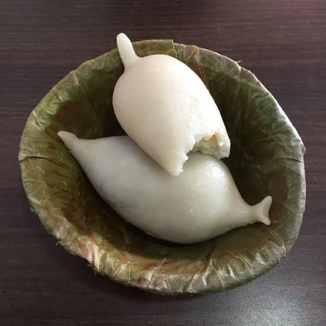
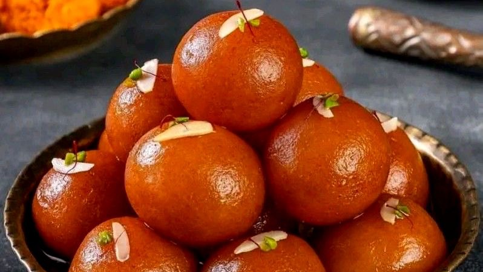

Enjoy delicious sweet dishes including traditional Nepali desserts and popular favorites.

A traditional Newari steamed sweet dumpling filled with chaku and sesame.

Soft golden milk-solid balls soaked in sweet and aromatic sugar syrup.